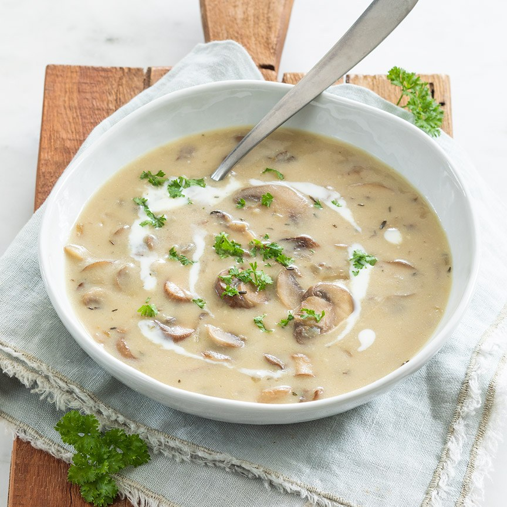

Ingrediënten:
500g champignons
50g boter
1 theelepel tijm
50 gram bloem
800ml heet water
2 tenen knoflook
2 uien
Voedingswaarde:
Energie 260 kcal
Vet 9,4g
Koolhydraten 33g
Waarvan suikers 11g
Vezels 10g
Eiwit 5,1g
Zout 3,89g
Berijdingswijze:
1.Snipper de uien en knoflook fijn.
2.Doe de rest van de boter toe en laat smelten tussen de champignons.
3.Los het bouillonblokje op in het hete water en giet vervolgens bij de champignons.
4.Roer goed door zodat de klontjes allemaal verdwijnen. Laat dit ongeveer 10 minuten koken.
5.Schenk de room erbij en proef of de soep nog een snufje peper of zout kan gebruiken.
6.Tip: gebruik ook eens kastanjechampignons in dit recept.
champignonsoep